전자기사 (2013-06-02 기출문제)
1과목: 전기자기학
1. 무한히 넓은 도체 평면판에 면밀도 σ[C/m2]의 전하가 분포되어 있는 경우 전력선은 면(面)에 수직으로 나와 평행하게 발산한다. 이 평면의 전계의 세기는 몇 [V/m]인가?
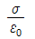
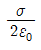
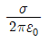
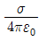
(정답률: 알수없음)

2. 균일하게 원형단면을 흐르는 전류 I[A]에 의한, 반지름 a[m], 길이 ℓ[m], 비투자율 μs인 원통도체의 내부 인덕턴스는 몇 [H]인가?
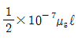
- 10-7μs ℓ
- 2×10-7μs ℓ
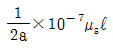
(정답률: 알수없음)
3. 유전체에 대한 경계조건에 설명이 옳지 않은 것은?
- 표면전하 밀도란 구속전하의 표면밀도를 말하는 것이다.
- 완전 유전체 내에서는 자유전하는 존재하지 않는다.
- 경계면에 외부전하가 있으면, 유전체의 내부와 외부의 전하는 평형되지 않는다.
- 특수한 경우를 제외하고 경계면에서 표면전하 밀도는 영(zero)이다.
(정답률: 34%)
4. 그림과 같이 정전용량이 C0[F]가 되는 평행판 공기콘덴서에 판면적이 1/2 되는 공간에 비유전율 εs인 유전체를 채웠을 때 정전용량은 몇 [F]인가?
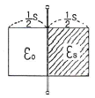
- 1/2(1+εs)C0
- (1+εs)C0
- 2/3(1+εs)C0
- C0
(정답률: 알수없음)
5. 정전류가 흐르고 있는 무한 직선도체로부터 수직으로 0.1[m]만큼 떨어진 점의 자계의 크기가 100[A/m]이면 0.4[m]만큼 떨어진 점의 자계의 크기[A/m]는?
- 10
- 25
- 50
- 100
(정답률: 알수없음)
6. 그림과 같이 전류 가 흐르는 반원형 도선이 평면 z=0 상에 놓여 있다. 이 도선이 자속밀도 B=0.8ax-0.7ay+az[Wb/m2]인 균일자계 내에 놓여 있을 때 도선의 직선 부분에 작용하는 힘은 몇 [N]인가?
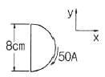
- 4ax + 3.2az
- 4ax - 3.2az
- 5ax - 3.5az
- -5ax + 3.5az
(정답률: 알수없음)
7. 전하 q[C]이 공기 중의 자계 H[AT/m]에 수직 방향으로 v[m/s] 속도로 돌입하였을 때 받는 힘은 몇 [N]인가?
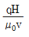
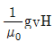
- qvH
- μ0qvH
(정답률: 36%)
8. 면적이 S[m2]이고 극간의 거리가 d[m]인 평행판 콘덴서에 비유전률 εs의 유전체를 채울 때 정전용량은 몇 [F]인가? (단, 진공의 유전률은 ε0이다.)
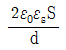
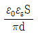
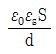
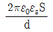
(정답률: 55%)
9. 변위 전류와 가장 관계가 깊은 것은?
- 반도체
- 유전체
- 자성체
- 도체
(정답률: 알수없음)
10. 압전기 현상에서 분극이 응력과 같은 방향으로 발생하는 현상을 무슨 효과라 하는가?
- 종효과
- 횡효과
- 역효과
- 간접효과
(정답률: 알수없음)
11. 자화의 세기로 정의할 수 있는 것은?
- 단위면적당 자위밀도
- 단위체적당 자기모멘트
- 자력선 밀도
- 자화선 밀도
(정답률: 알수없음)
12. 전선의 체적을 동일하게 유지하면서 2배의 길이로 늘였을 때 저항은 어떻게 되는가?
- 1/2로 줄어든다.
- 동일하다.
- 2배로 증가한다.
- 4배로 증가한다.
(정답률: 70%)
13. 평면 도체로부터 수직거리 a[m]인 곳에 점전하 Q[C]가 있다. Q와 평면도체 사이에 작용하는 힘은 몇 [N]인가? (단, 평면도체 오른편을 유전율 ε의 공간이라 한다.)
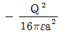
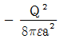
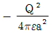
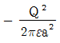
(정답률: 알수없음)
14. 무한평면도체에서 d[m]의 거리에 있는 반경 a[m]의 구도체와 평면도체 사이의 정전용량은 몇 [F]인가? (단, a≪d 이다.)
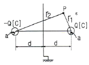
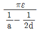
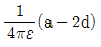
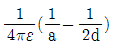
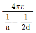
(정답률: 알수없음)
15. 자계의 벡터퍼텐셜을 A[Wb/m]라 할 때 도체 주위에서 자계 B[Wb/m2]가 시간적으로 변화하면 도체에 생기는 전계의 세기 E[V/m]은?
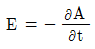
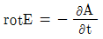
- E=rotA
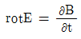
(정답률: 알수없음)
16. 공극을 가진 환상솔레노이드에서 총 권수 N회, 철심의 투자율 μ[H/m], 단면적 S[m2], 길이 ℓ[m]이고 공극의 길이가 δ[m]일 때 공극부에 자속밀도 B[Wb/m2]을 얻기 위해서는 몇 [A]의 전류를 흘려야 하는가?
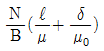
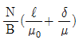
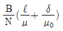
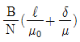
(정답률: 알수없음)
17. 그림과 같이 권수 50회이고 전류 1[mA]가 흐르고 있는 직사각형 코일이 0.1[Wb/m2]의 평등자계 내에 자계와 30°로 기울어 놓았을 때 이 코일의 회전력 [Nㆍm]은? (단, a=10[cm], b=15[cm]이다.)
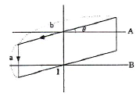
- 3.74×10-5
- 6.49×10-5
- 7.48×10-5
- 11.22×10-5
(정답률: 알수없음)
18. 반지름 a[m]이고, N=1회의 원형코일에 1[A]의 전류가 흐를 때 그 코일의 중심점에서의 자계의 세기 [AT/m]는?
- 1/(2πa)
- 1/(4πa)
- 1/(2a)
- 1/(4a)
(정답률: 알수없음)
19. 자화율(magnetic susceptibility) X는 상자성체에서 일반적으로 어떤 값을 갖는가?
- X = 0
- X = 1
- X < 0
- X > 0
(정답률: 30%)
20. 비투자율 μs=800, 원형 단면적이 S=10[cm2], 평균 자로길이 ℓ=8π×10-2[m]의 환상 철심에 600회의 코일을 감고 이것에 1[A]의 전류를 흘리면 내부의 자속은 몇 [Wb]인가?
- 1.2×10-3
- 1.2×10-5
- 2.4×10-3
- 2.4×10-5
(정답률: 알수없음)
2과목: 회로이론
21. 다음 회로에서 전류 I의 크기는?
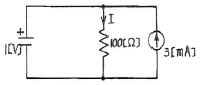
- 3[mA]
- 7[mA]
- 10[mA]
- 13[mA]
(정답률: 알수없음)
22. 정현파 전압의 진폭이 Vm이라면 이를 반파 정류했을 때의 평균값은?
- Vm/√2
- Vm/2
- Vm/π
- 2Vm/π
(정답률: 70%)
23. 다음은 정현파를 대표하는 phasor이다. 정현파를 순시치로 나타내면?
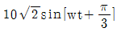
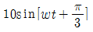
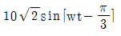
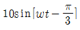
(정답률: 65%)
24. RLC 직렬 공진회로에서 공진주파수 10[kHz]에서 선택도가 5일 때 차단주파수 f1, f2는 각각 몇 [kHz]인가?
- f1 = 8, f2 = 10
- f1 = 9, f2 = 11
- f1 = 8.5, f2 = 10.5
- f1 = 9.5, f2 = 11.5
(정답률: 알수없음)
25.
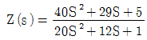
로 주어진는 2단자 회로망에 직류전압 5[V]를 인가시 이 회로망에 흐르는 정상상태에서의 전류는? (단, S=jw)- 1[A]
- 2.5[A]
- 5[A]
- 10[A]
(정답률: 알수없음)
26. 그림과 같은 4단자 회로망에서 4단자 정수를 ABCD 파라미터로 나타낸 때 A는? (단, A는 개방 역방향 전압이득이다.)
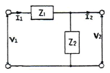
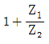
- Z1
- 1/Z1
- 1
(정답률: 77%)
27. 다음 그림과 같은 회로에서 합성인덕턴스는 몇 [H]인가? (단, L1=6[H], L2=3[H], M=3[H]이다.)
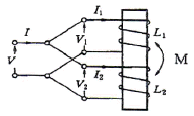
- 1
- 2
- 3
- 6
(정답률: 73%)
28. 그림과 같은 회로에서 저항 10[Ω]의 지로를 흐르는 전류는?
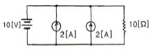
- 1[A]
- 2[A]
- 4[A]
- 5[A]
(정답률: 알수없음)
29. 두 함수f1(t)=1, f2(t)=e-t일 때 합성 적분치는?
- e-t
- 1-et
- 1-e-t
- 1/e-t
(정답률: 37%)
30. R-L 직렬회로의 과도응답에서 감쇠율은?
- L
- R
- L/R
- R/L
(정답률: 40%)
31. 다음 회로의 어드미턴스 파라미터 Y11은?
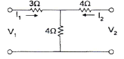
- 1/7[℧]
- 1/5[℧]
- 4/7[℧]
- 1/3[℧]
(정답률: 30%)
32. 분류기를 사용하여 전류를 측정하는 경우 전류계의 내부 저항이 0.1[Ω], 분류기의 저항이 0.01[Ω]이면 그 배율은?
- 4
- 10
- 11
- 14
(정답률: 60%)
33. 정 K형 저역통과 필터의 공칭 임피던스는?
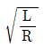
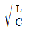
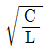
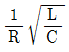
(정답률: 64%)
34. R, L, C 병렬 공진회로에 관한 설명 중 옳지 않은 것은?
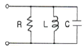
- 공진시 L 또는 C로 흐르는 전류는 입력 전류 크기의 1/Q배가 된다.
- 공진시 입력 어드미턴스는 매우 작아진다.
- 공진 주파수 이하에서의 입력 전류는 전압보다 위상이 뒤진다.
- R이 작을수록 Q가 낮다.
(정답률: 30%)
35. 선형 회로에 가장 관계가 있는 것은?
- V=I2R
- 중첩의 정리
- 키르히호프의 법칙
- 래러데이의 전자유도 법칙
(정답률: 알수없음)
36. 다음과 같은 회로망의 전압비 전달함수 G(jw)로 옳은 것은? (단, V(t)는 정현파이다.)
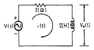
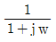
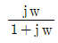
(정답률: 알수없음)
37. 다른 두 종류의 금속선으로 된 폐회로의 두 접합점의 온도를 달리하였을 때 열기전력이 발생하는 효과는?
- Peltier 효과
- Seebeck 효과
- Pinch 효과
- Thomson 효과
(정답률: 50%)
38. 그림과 같은 반파정류 정현파의 평균값은 약 얼마인가? (단, 0≤ωt≤π일 때 S(t)=sinωt이고, π＜ωt＜2π일 때 S(t)=0인 주기함수이다.)
- 0.23
- 0.32
- 0.5
- 0.64
(정답률: 37%)
39. f(t)=e-atcosωt의 Laplace 변환은?
(정답률: 46%)
40. 분포 정수 회로에서 회로 정수 사이에는 어떤 관계가 있는가?
- AD-CD=1
- AB+CD=1
- AD+BC=1
- AD-BC=1
(정답률: 55%)
3과목: 전자회로
41. 다음 중 시미트 트리거 회로의 용도로 가장 옳지 않은 것은?
- D/A 변환회로로 사용된다.
- 구형파 펄스 발생회로로 사용한다.
- 노이즈 등에 의한 오동작을 방지하기 위하여 사용된다.
- 임의의 파형에서 그 크기에 해당하는 펄스폭의 구형파를 얻기 위해서 사용된다.
(정답률: 80%)
42. 다음 회로의 출력 파형(V<sub>o</sub>)으로 가장 적합한 것은?
(정답률: 알수없음)
43. 다음 그림(b)는 회로(a)에 대한 직류 및 교류 부하선을 나타낸 것이다. 회로(a)의 부하저항 RL의 값은 약 몇 [kΩ]이 되어야 하는가?
- 1[kΩ]
- 2[kΩ]
- 3[kΩ]
- 4[kΩ]
(정답률: 알수없음)
44. 일반적인 궤환회로에서 전압증폭도 라고 하면 이때 부궤환 작용을 할 수 있는 조건은? (단, A는 궤환이 일어나지 않을 때의 이득이다.)
- Aβ = ∞
- Aβ = 1
- |1-Aβ| < 1
- |1-Aβ| > 1
(정답률: 알수없음)
45. 논리함수 를 간략화한 것으로 옳은 것은?
(정답률: 알수없음)
46. 다이오드 검파회로에서 AGC 전압의 크기는 다음 어느 것에 따라 커지는가?
- 반송파 변조도가 증가함에 따라
- 반송파 주파수가 증가함에 따라
- 반송파 전압의 진폭이 증가함에 따라
- 변조한 저주파 주파수가 증가함에 따라
(정답률: 60%)
47. 다음과 같은 궤환회로의 입력 임피던스는 궤환이 없을 때와 비교하면 어떻게 변하는가?
- 증가한다.
- 변화없다.
- 감소한다.
- R이 된다.
(정답률: 70%)
48. 연산증폭기와 다이오드로 구성된 다음 회로의 명칭은?
- 진폭제한회로
- 반파정류회로
- 전파정류회로
- 정현파-삼각파 변환회로
(정답률: 72%)
49. 그림과 같은 회로에 입력(Vi)에 정현파를 인가할 경우 출력파형은?
(정답률: 알수없음)
50. 드리프트(drift) 현상의 주된 원인으로 적합하지 않은 것은?
- 소자의 경년변화
- 전원전압의 변화
- 주위 온도변화
- 대역폭의 변화
(정답률: 알수없음)
51. 증폭기로 동작하기 위하여 npn 트랜지스터 베이스는 어떻게 바이어스 되어야 하는가?
- 이미터에 대한 양(+)의 값
- 이미터에 대한 음(-)의 값
- 컬렉터에 대한 양(+)의 값
- 접지
(정답률: 60%)
52. AM 변조 방식 중 효율이 가장 좋은 방식은?
- 이미터 변조
- 베이스 변조
- 평형 변조
- 컬렉터 변조
(정답률: 40%)
53. 다음 회로의 동작에 대한 설명으로 가장 적합한 것은? (단, 입력신호는 진폭이 Vm인 정현파이고, 다이오드는 이상적인 것이며, RC 시정수는 신호파의 주기에 비해 매우 크다.)
- 출력전압은 Vi - Vm인 정현파이다.
- 출력전압은 Vi - VR인 정현파이다.
- 출력전압은 VR - Vm인 정현파이다.
- 부방향 peak를 기준레벨 VR로 클램프한다.
(정답률: 알수없음)
54. 다음 중 트랜스 결합 증폭회로에 대한 설명으로 적합하지 않은 것은?
- 트랜스의 성능을 좋게 하기 위해서는 크기가 대형이고 값이 비싸다.
- 주파수 특성이 매우 평탄하다.
- 전압손실이 거의 없어 전원 효율이 좋다.
- 트랜스 결합 증폭회로는 임피던스 정합이 용이하여 주로 전력증폭용으로 사용된다.
(정답률: 알수없음)
55. 불대수에서 (A+B)(A+C)와 등식이 성립하는 것은?
- ABC
- A+B+C
- AB+C
- A+BC
(정답률: 알수없음)
56. 다음 회로는 2차 고역통과필터이다. 이 필터의 전압이득 Av와 차단주파수 fτ는? (단, R1=R2=2.1[kΩ], C1=C2=0.⑤[μF], RG=10[kΩ], RF=50[kΩ]이다.)
- Av = 6, fτ = 약 1.5[kHz]
- Av = 5, fτ = 약 2.5[kHz]
- Av = 4, fτ = 약 3.5[kHz]
- Av = 3, fτ = 약 4.5[kHz]
(정답률: 알수없음)
57. M/S 플립플롭은 어떠한 현상을 해결하기 위한 것인가?
- Delay 현상
- Race 현상
- Set 현상
- Toggle 현상
(정답률: 55%)
58. 수정발진기는 수정의 임피던스가 어떻게 될 때 가장 안정된 발진을 계속하는가?
- 저항상
- 용량성
- 유도성
- 용량성 또는 저항성
(정답률: 알수없음)
59. 다음 중 트랜지스터 증폭회로에서 높은 주파수에서 이득이 감소하는 이유로 가장 적합한 것은?
- 부성저항이 생기기 때문에
- 결합 커패시턴스의 영향 때문에
- 하이브리드 정수의 변화 때문에
- 도선 등의 표유 용량 때문에
(정답률: 알수없음)
60. 8진수 (367.25)8를 16진수로 변환하면?
- (F7.54)16
- (F8.54)16
- (F7.44)16
- (FE.54)16
(정답률: 알수없음)
4과목: 물리전자공학
61. 상온 300[K]에서 페르미 준위보다 0.1[eV]만큼 낮은 에너지 준위에 전자가 점유하는 확률은?
- 0.1
- 0.02
- 0.9
- 0.98
(정답률: 28%)
62. 진성 반도체에서 드리프트 전류의 대부분이 자유전자에 의해 발생하는 가장 큰 이유는?
- 정공은 가전자대에 있기 때문
- 자유전자는 전도대에 있기 때문
- 정공보다 더 많은 자유전자가 있기 때문
- 자유전자의 이동도가 정공의 이동도보다 크기 때문
(정답률: 67%)
63. 펀치스로우(punch through) 현상에 대한 설명 중 옳지 않은 것은?
- 입력측 개방으로 인한 역포화전류 현상이다.
- 이미터, 베이스, 컬렉터의 단락 상태이다.
- 역바이어스 전압의 증가시 발생하는 현상이다.
- 펀치스로우 전압의 크기는 베이스 내의 불순물 농도에 비례한다.
(정답률: 알수없음)
64. 트랜지스터의 출력특성에는 Bias 구성에 의한 동작 영역이 있다. 증폭동작이 가능한 영역은?
- 포화(Saturation) 영역
- 차단(Cut-off) 영역
- 활성(Active) 영역
- 역활성(Inverted Active) 영역
(정답률: 알수없음)
65. Si 접합형 npn 트랜지스터의 베이스 폭이 10-5[m]일 때, α 차단주파수는 약 몇 [MHz]인가? (단, Si의 전자이동도 μn은 0.15[m2/Vㆍs]이다.)
- 4[MHz]
- 12[MHz]
- 15[MHz]
- 31[MHz]
(정답률: 알수없음)
66. 페르미 준위에 대한 설명으로 옳지 않은 것은?
- 전자의 존재 확률은 50[%]가 된다.
- 0[K]에서 전자의 최고 에너지가 된다.
- 0[K]에서 N형 반도체의 경우 전도대와 금지대 사이에 위치한다.
- 진성 반도체의 경우 온도와 무관하게 금지대 중앙에 위치한다.
(정답률: 알수없음)
67. 다음 중 에너지밴드에 속하지 않는 것은?
- 전도대
- 금지대
- 가전자대
- 전기대
(정답률: 알수없음)
68. 다음 중 열평형 상태에 있는 반도체에서 정공(正孔)밀도 p와 전자밀도 n을 곱한 pn적에 관한 설명으로 옳은 것은?
- 온도 및 불순물 밀도의 함수이다.
- 온도 및 금지대 에너지 폭의 함수이다.
- 불순물 밀도 및 금지대 에너지 폭의 함수이다.
- 불순물 밀도 및 Fermi 준위의 함수이다.
(정답률: 19%)
69. 반도체의 전자와 정공에 대한 설명 중 옳지 않은 것은?
- 자유전자는 정공보다 이동도가 더 크다.
- 전자의 흐름과 정공의 흐름은 반대이다.
- 전자와 정공이 결합하면 에너지를 흡수한다.
- 전자가 공유결합을 이탈하면 정공이 생성된다.
(정답률: 알수없음)
70. 캐리어의 확산 거리는 무엇에 의존하는가?
- 반도체의 모양
- 캐리어의 이동도에만 의존
- 캐리어의 이동도와 수명시간에 의존
- 캐리어의 수명시간에만 의존
(정답률: 62%)
71. 반도체 재료의 제조시 고유저항 측정을 가끔하는 이유는?
- 불순물 반도체의 캐리어 농도를 결정하기 때문
- 다결정 재료의 수명 시간을 결정하기 때문
- 진성 반도체의 캐리어 농도를 결정하기 때문
- 캐리어의 이동도를 결정하기 때문
(정답률: 알수없음)
72. SCR에 관한 설명 중 옳지 않은 것은?
- 브레이크오버(breakover) 전압은 게이트 전압과는 무관하다.
- 브레이크오버 전압 이하의 전압에서도 역포화 전류와 비슷한 낮은 전류가 흐른다.
- 전도 상태를 유지하는데 필요한 최소의 전류를 순방향 유지 전류라 한다.
- 애노드와 캐소드 사이에만 전압을 인가하면 PN 접합의 역방향 특성과 비슷하다.
(정답률: 알수없음)
73. 고주파수의 신호 전압에서 완벽하게 동작하기 위한 트랜지스터의 조건에 대한 설명 중 옳지 않은 것은?
- 베이스 영역 폭이 넓어야 한다.
- 베이스 영역에 주입되는 캐리어의 확산계수가 커야 한다.
- 이미터로부터 주입되는 캐리어가 컬렉터에 도달하는 시간지연이 짧아야 한다.
- 전자의 확산계수가 정공의 확산계수보다 커야 한다.
(정답률: 알수없음)
74. Zener diode 특성의 설명으로 옳은 것은?
- 가하는 전압에 따라 용량(C)이 변화한다.
- 가하는 전압에 따라 전류의 방향이 달라진다.
- 고주파에 대한 특성이 특별히 우수하다.
- 정전압 방전관과 같은 특성을 가지고 있다.
(정답률: 55%)
75. 2×104[m/sec]의 속도로 운동하는 전자의 드브로이(de Broglie) 파장은? (단, 프랑크 상수는 6.626×10-34[Jㆍsec], 전자의 질량은 9.1×10-31[kg])
- 1.82×10-26[m]
- 3.64×10-8[m]
- 1.64×1034[m]
- 1.21×10-16[m]
(정답률: 알수없음)
76. 어떤 반도체의 금지대폭 Eg가 상온 300[°K]에서 500[kT]일 때 이 반도체가 도전 상태가 되기 위한 필요 에너지는 약 얼마인가?
- 2[eV]
- 8[eV]
- 13[eV]
- 20[eV]
(정답률: 알수없음)
77. 물질을 구성하고 있는 소립자에도 파동성이 있다고 최초로 주장한 사람은?
- Einstein
- De Broglie
- Rutherford
- Avogadro
(정답률: 알수없음)
78. 전도대와 가전자대 사이의 금지대(에너지 갭) 크기를 순서대로 나열한 것은?
- 절연체>반도체>도체
- 반도체>도체>절연체
- 반도체>절연체>도체
- 도체>반도체>절연체
(정답률: 알수없음)
79. PN 접합 다이오드에 순바이어스를 인가할 때 공핍층 근처의 소수캐리어 밀도는 어떻게 변화하는가?
- P영역과 N영역에서 모두 감소한다.
- P영역과 N영역에서 모두 증가한다.
- P영역에서 증가하고, N영역에서 감소한다.
- P영역에서 감소하고, N영역에서 증가한다.
(정답률: 알수없음)
80. 광전자 방출 현상에 있어서 방출된 전자의 에너지는?
- 광의 세기에 비례한다.
- 광의 속도에 비례한다.
- 광의 주파수에 비례한다.
- 광의 주파수에 반비례한다.
(정답률: 알수없음)
5과목: 전자계산기일반
81. 인코더의 입력선이 8개이면, 출력선은 몇 개가 되는가?
- 1
- 2
- 3
- 4
(정답률: 50%)
82. 다음 중 메이저 상태의 수행 사이클에 해당하지 않은 것은?
- 인출 사이클
- 간접 사이클
- 직접 사이클
- 인터럽트 사이클
(정답률: 50%)
83. AND 연산에서 레지스터 내의 어느 비트 또는 문자를 지울 것인가를 결정하는 것은?
- mask bit
- sign bit
- check bit
- parity bit
(정답률: 70%)
84. 어떤 디스크의 탐색시간이 20[ms], 데이터 전송시간이 0.5[ms], 회전지연시간이 8.3[ms] 이라고 할 때, 데이터를 읽거나 쓰는데 걸리는 평균 액세스 시간은?
- 9.65[ms]
- 11.2[ms]
- 28.8[ms]
- 30.8[ms]
(정답률: 70%)
85. 캐시(cache) 메모리에 관한 설명 중 옳은 것은?
- hard disk에 비해서 가격이 저렴하다.
- 주기억장치에 비해서 속도가 느리지만 오류 수정 기능이 있다.
- 주기억장치에 비해서 속도가 빠르고, 가격이 비싸다.
- 병렬 처리 컴퓨터에 필수적이다.
(정답률: 50%)
86. 다음 중 순서도의 유형이 아닌 것은?
- 직선형 순서도
- 분기형 순서도
- 반복형 순서도
- 교차형 순서도
(정답률: 알수없음)
87. 리처드 스톨먼 등에 의해 만들어졌으며, 품질이 매우 좋고 이식성이 좋은 C 컴파일러는?
- GCC
- JAVAC
- YACC
- CC
(정답률: 47%)
88. 컴퓨터에서 세계 각국의 언어를 통일된 방법으로 표현할 수 있게 제안된 국제적인 코드는?
- BCD 코드
- ASCII 코드
- UNICODE
- GRAY 코드
(정답률: 알수없음)
89. 8비트 마이크로프로세서에서 스택 포인터가 100번지를 가리키고 있다 3바이트의 내용을 스택에 푸시하면 스택 포인터는 몇 번지를 가리키는가?
- 96번지
- 97번지
- 196번지
- 197번지
(정답률: 알수없음)
90. 아래 C 프로그램의 출력 결과는?
- 0
- 2
- 25
- 50
(정답률: 알수없음)
91. 동시에 2개 이상의 프로그램을 컴퓨터에 로드(load)시켜 처리하는 방법을 무엇이라 하는가?
- double programming
- multi programming
- multi-accessing
- real-time programming
(정답률: 알수없음)
92. 다음 중 CPU의 레지스터로 볼 수 없는 것은?
- 누산기(Accumulator)
- 명령어 레지스터(Instruction Register)
- RAM(Random Access Memory)
- 프로그램 카운터(Program Counter)
(정답률: 60%)
93. 회전속도가 7200[rpm]인 하드디스크의 최대 회전 지연시간은?
- 약 4.2[ms]
- 약 8.3[ms]
- 약 12.3[ms]
- 약 16.6[ms]
(정답률: 28%)
94. 2진수의 부동소수점(floating point) 표현에 대한 설명으로 틀린 것은?
- 고정소수점(fixed point) 표현 방식보다 수를 표현할 수 있는 범위가 넓다.
- 지수(exponent)를 사용하여 소수점의 범위를 넓게 이동시킬 수 있다.
- 소수점 이하의 수를 나타내는 가수(mantissa)의 비트수가 늘어나면 정밀도가 증가한다.
- IEEE 754 부동소수점 표준 중 64비트 복수 정밀도 형식은 32비트 지수를 가진다.
(정답률: 알수없음)
95. 인터럽트에 대한 설명 중 옳지 않은 것은?
- 하드웨어의 오류에 의해 발생하기도 한다.
- 인터럽트가 발생하면 특정한 일을 수행한다.
- 프로그램의 수행을 중단시키기 위해 사용되기도 한다.
- 인터럽트가 발생하면 현재 수행중인 프로그램은 무조건 종료된다.
(정답률: 알수없음)
96. 다음 중 에러를 찾아서 교정을 할 수 있는 코드는?
- hamming code
- ring counter code
- gray code
- 8421 code
(정답률: 알수없음)
97. 프로그램이 수행될 때 최근에 사용한 인스트럭션과 데이터를 다시 사용할 가능성이 크다는 것을 무엇이라 하는가?
- 접근의 국부성
- 디스크 인터리빙
- 페이징
- 블록킹
(정답률: 60%)
98. CPU 레지스터 중에서 프로그래머가 직접 사용하여 프로그래밍 할 수 없는 것은?
- 인스트럭션 레지스터
- 범용 레지스터
- 연산용 레지스터
- 인덱스 레지스터
(정답률: 알수없음)
99. Two address machine에서 기억용량이 65536=216이고 Word length가 40Bit라면 이 명령형(Instruction Format)에 대한 명령코드는 몇 Bit 구성되는가?
- 5
- 6
- 7
- 8
(정답률: 알수없음)
100. 10진수 (18 - 72)을 BCD 코드로 올바르게 나타낸 것은? (단, 보수는 9의 보수 사용)
- 0100 0101
- 1011 0110
- 1100 1001
- 1100 1010
(정답률: 알수없음)
전기장의 세기 E는 전하밀도 σ와 직접적인 관련이 있으며, E = σ/ε_0 이다. 여기서 ε_0는 자유공간의 유전율이다.
따라서 이 문제에서는 전하밀도 σ가 주어졌으므로, 전기장의 세기 E를 구하기 위해 ε_0의 값을 알아야 한다. ε_0의 값은 자유공간에서의 유전율로, 8.85 × 10^-12 [F/m]이다.
따라서 전기장의 세기 E = σ/ε_0 = 2 × 10^-6 / 8.85 × 10^-12 = 2.26 × 10^5 [V/m]이다.
정답은 "" 이다.